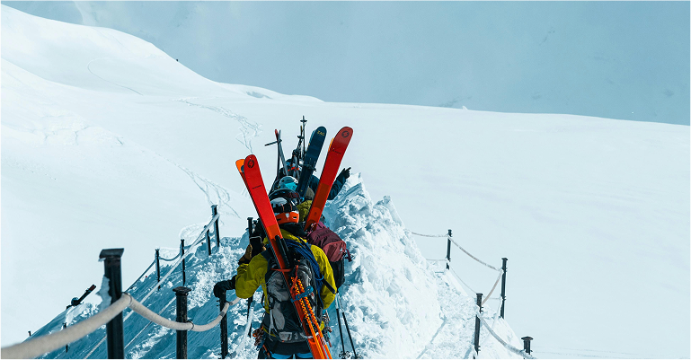

BackCountry
Travel Guidelines
Backcountry travel offers incredible adventure, but preparation is key to staying safe. Plan ahead by researching terrain, weather, and regulations, and always share your itinerary. Carry essential gear, including navigation tools, extra supplies, and emergency equipment. Respect nature by following Leave No Trace principles, staying on trails, and properly storing food to avoid wildlife encounters.
Introduction
Having the right gear is essential for backcountry travel. A well-packed backpack should include navigation tools like a map, compass, or GPS device, as well as extra food, water, and clothing to prepare for sudden weather changes. A first aid kit, emergency shelter, and a reliable light source are crucial in case of injury or unexpected overnight stays. Lightweight but durable equipment can make a significant difference in comfort and safety.
Respecting the environment is a key responsibility for all backcountry travelers. Follow Leave No Trace principles by packing out all trash, minimizing campfire impact, and avoiding damage to plants and wildlife. Stick to established trails when possible to prevent erosion, and camp at least 200 feet away from water sources to protect fragile ecosystems. Sustainable practices help preserve these landscapes for future adventurers.

Whether you're embarking on a multi-day trek or a short off-trail excursion, understanding the fundamentals of backcountry travel can make all the difference in ensuring a rewarding and safe experience.
Wildlife encounters are another important consideration when traveling in remote areas. Store food properly using bear-resistant containers or hanging methods, and keep a safe distance from animals to avoid conflicts. Learning how to respond to encounters with wildlife, such as bears or mountain lions, can make a significant difference in ensuring both human and animal safety.
"The wilderness holds answers to more questions than we have yet learned to ask." — Nancy Wynne Newhall
Understanding your own limits is crucial in the backcountry. Physical endurance, altitude, and weather conditions can all impact performance, so it's important to recognize when to turn back. Pushing beyond your capabilities can lead to exhaustion, injury, or dangerous situations. Traveling with a group can add an extra layer of safety, but solo travelers should take additional precautions, such as carrying a satellite communication device.
Conclusion
Emergency preparedness is vital, as help may not be readily available in remote locations. Sudden weather shifts, injuries, or getting lost can quickly turn an adventure into a survival situation. Carrying a whistle, signal mirror, or personal locator beacon (PLB) can improve the chances of rescue if needed. Knowing basic survival skills, like how to build a shelter or start a fire in wet conditions, can be lifesaving.
Backcountry travel is an incredibly rewarding experience, offering solitude, stunning scenery, and a deeper connection with nature. However, it requires knowledge, preparation, and respect for both personal safety and the environment. By planning ahead, staying aware of risks, and practicing responsible travel habits, adventurers can enjoy the wilderness safely while helping to preserve it for future generations.

Current Weather & Avalanche Risk
Stay updated on avalanche conditions before heading out. Rapid weather changes can increase danger—always assess conditions and plan accordingly. Stay alert, stay prepared!